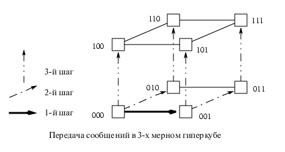
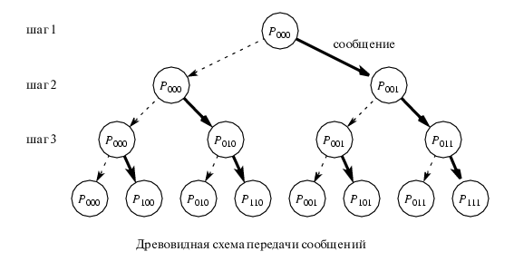

Задача о широковещательной передаче данных "от одного всем"
Распараллеливание этой задачи необходимо для решения проблемы увеличения скорости централизованного
распространения файлов, изображений, репликаций баз данных, зеркалирования серверов, видео и аудиовещания, для дистанционного
образования и телемедицины и т.д.
Рассмотрим задачу о широковещательной передаче данных из одного узла по сети трехмерного
гиперкуба. Имеются 8 узлов: 000, 001, 010, 011, 100, 101, 110 и 111.
Из узла 000 нужно передать одно и то же сообщение во все остальные узлы,
при этом все узлы могут обмениваться сообщениями.

Эффективный алгоритм таков:
- 1 шаг:
- 2 шаг:
- Узел 000 ---- узел 010
- Узел 001 ---- узел 011
- 3 шаг:
- Узел 000 ---- узел 100
- Узел 000 ---- узел 101
- Узел 010 ---- узел 110
- Узел 011 ---- узел 111
Общее время (time complexity) для этого алгоритма будет оцениваться
как O(log n) и этот алгоритм оптимален. Удобно изображать графически
алгоритмы распределения задачи по процессорам в виде деревьев. Данная задача
может быть представлена следующим образом:



 [Назад]
[Оглавление]
[Вперед]
[Назад]
[Оглавление]
[Вперед]
Последнее обновление 21.11.2001 WebMaster